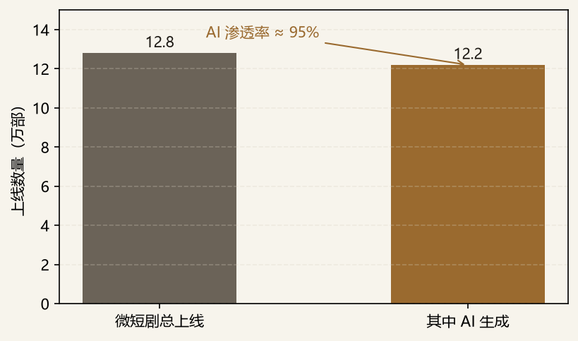
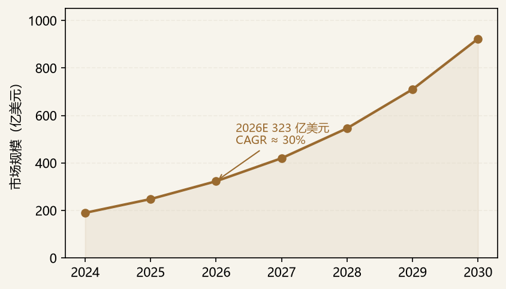
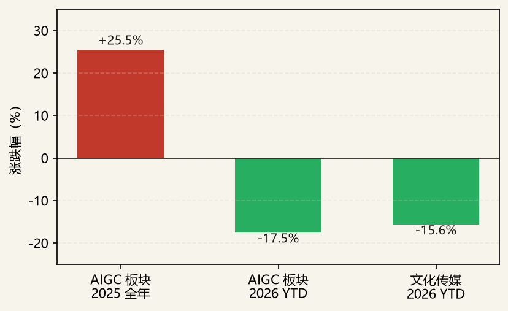

AIGC 正从“生产率工具”迈向“内容生产范式”，数字文化消费（AI 原生内容、数字人/IP、互动叙事）是离 C 端变现最近、也最契合“科技 × 消费 × 文化”复合判断的切口。本备忘录的核心 thesis 采用 B+C 双核：以 应用层（B：AI 短剧 / 精品内容） 与 工具层（C：AI 3D 创意工具） 为两条主线，覆盖“内容生产链路重构”；底层视频模型（A）与 AI 音乐（D）因 ROI 与版权困境，不作为拟投标的，仅作反向论证（见六、九）。
在底层模型能力趋同、红利向应用层与工具层迁移的背景下，具备 数据闭环 与 版权合规 能力的团队将获得溢价。对 CVC/战投而言，这是布局“下一代文化消费入口”的战略窗口，但也需警惕主题热度退潮后的估值回调。
边界：区别于纯算力 / 模型（基础设施层）与纯 SaaS 工具（生产率），本备忘录聚焦「内容 × 消费」应用层与 IP 层——这也是大厂自带流量、但垂类仍存空白的地带。
需求侧，技术拐点（多模态成熟、推理成本下降）使规模化 AIGC 内容具备经济性；消费代际上，Z/α 世代对 AI 原生内容的接受度与付费意愿提升；政策端“文化数字化战略”与“AI 内容标识合规”并行推进。供给侧，微短剧已成为 AI 内容最大的工业化试验场：

工具层方面，3D 资产是游戏 / 电商 / 影视 / 打印的通用生产要素，AI 把建模门槛降到消费级，市场处于高速扩张期：

但资本层面，主题热度已在退潮。A 股 AIGC 板块 2025 全年上涨 25.5%，2026 年初至 7 月回落 17.5%、文化传媒回落 15.6%——估值挤水分、进入“看真实变现”阶段，恰是基本面研究者的机会窗口：

| 环节 | 构成 | 价值判断 |
|---|---|---|
| 上游 | 基础模型、算力、版权语料 | 商品化加速，壁垒弱化 |
| 中游 | 创作工具 / 平台（生成、编辑、协作） | 短期拥挤，需垂直差异化 |
| 下游 | 分发、消费、社区 | 流量归大厂，垂类可破 |
| 衍生 | IP 运营、版权、虚实融合 | 中长期价值集中地 |
本备忘录以“AI 重构数字文化内容的生产链路”为主线，覆盖应用层与工具层两条相邻赛道。主线 A（底层视频模型）与主线 D（AI 音乐）不作为拟投标的，仅作反向论证（见六、九）。
| 标的 | 赛道 | 利好（投资逻辑） | 利空 · 风险 | 主要股东 / 战投 | 状态 |
|---|---|---|---|---|---|
| 影眸科技 Hyper3D / Rodin | C 工具层 | 生产级 3D，客户含字节 / Unity / Figma / Canva，海外占 80%，技术壁垒清晰 | 高估值、与通用大模型内置 3D 能力竞争、海外合规成本 | 红杉、奇绩创坛等；客户含字节系 | 拟投关注（首选） |
| VAST / Tripo | C 工具层 | 轻量化 3D，阿里领投 A3 轮超 10 亿，游戏 / 3D 打印场景落地 | 与影眸同质化竞争、商业化节奏待验证 | 阿里巴巴（领投） | 已投（阿里）关注 |
| 水母智能 | B 应用层 | 精品 AI 短剧《天机入梦》入围戛纳、红果上线，证明应用层可商业化 | 单部爆款难复制、依赖平台流量分配 | 产业方为主 | 拟投关注 |
| 八点八数字 AniShort | B 应用层 | AI 短剧协作平台，近亿元融资为赛道最大单笔，卡位生产工具 | 平台型变现路径长、与剪辑工具边界模糊 | 多家财务投资人 | 拟投关注 |
| 生数科技 Vidu | A 模型层 | 视频模型（清华系，赴港），懂底座但不盲投 | 视频模型 ROI / 版权 / 烧钱困境 | 启明、经纬等 | 反向论证 |
| 昆仑万维 Mureka | D 音乐 | AI 音乐毛利转正、90% 海外，能识别泡沫 | 占平台新增投稿 44% 但播放不足 3%，版权死结 | 昆仑万维（自有） | 反向论证 |
反向论证（A / D 为何不作为拟投标的）：视频模型层 Sora 已于 2026.3 关停，行业陷 ROI / 版权 / 烧钱困境；AI 音乐占平台新增投稿 44% 但播放不足 3%，“虚假繁荣”+ 版权死结短期无解。此二者是面腾讯 / 字节战投必须懂、但 memo 中应规避的坑。
以 2026 Q1 上线微短剧 12.8 万部、其中 AI 生成 12.2 万部计，渗透率 = 12.2 / 12.8 ≈ 95%。该比值反映 AI 已成为短剧生产的默认基础设施，但高渗透率同时意味着“纯 AI 产能”红利见顶，超额收益将来自精品化与 IP 化（即主线 B 的筛选逻辑）。
以 2026E 323 亿美元为锚，按 30% 复合增速外推，2030 年市场约 923 亿美元（图 2）。关键假设：游戏 / 电商 3D 资产需求持续扩张、消费级建模工具渗透提速；若宏观经济或游戏版号收紧，增速下修至 20%–25%。
AIGC 板块 2025 全年 +25.5%、2026 YTD −17.5%，回撤幅度约 43 个百分点（相对 2025 收盘）；文化传媒 −15.6%。说明主题资金退潮、估值向基本面收敛，拟投标的的 entry valuation 应参照 2026 年回调后的可比区间，而非 2025 年高点。
本赛道标的估值分化显著：工具层（3D）因技术壁垒与海外收入享受高 PS 倍数，应用层（精品内容）因爆款不确定性估值更难锚定。以下倍数均为基于公开信息的示意框架，正式估值须以最新融资条款、财报及 Wind 校准。采用“示意框架”的原因：一级市场标的无连续交易价，last round 估值受融资窗口与对赌条款影响大；文娱资产现金流受内容周期与政策扰动显著，静态 PS/PE 易失真；海外可比（Unity / Roblox / Netflix）含全球流动性与平台溢价，直接对标仅能给区间。
| 标的 | 最新轮次估值（示意） | 参考倍数 | 海外可比 | 估值判断 |
|---|---|---|---|---|
| 影眸科技 | 约 30–50 亿元 | PS 15–25×（按 2026E 收入） | Unity / Roblox | 偏高但技术壁垒支撑，关注收入兑现 |
| VAST / Tripo | 约 40–60 亿元 | PS 12–20× | Unity | 与影眸趋同，看 A3 轮后增长 |
| 水母智能 | 未公开（早期） | 难以倍数锚定 | 独立内容工作室 | 看单部 ROI 与平台绑定深度 |
| 八点八数字 | 约 5–8 亿元（近亿元融资） | PS / 用户数混合 | 创作平台 | 平台化路径决定上限 |
| 情景 | 概率 | 关键触发 | 对组合影响 |
|---|---|---|---|
| Bull | 25% | 精品 AI 短剧跑出国民级 IP；3D 工具海外收入翻倍；监管明确合规指引 | 工具层估值重估，应用层从 0 到 1 兑现 |
| Base | 50% | 渗透率维持高位、精品化分化；3D 市场按 CAGR 30% 兑现；板块低位震荡 | 结构性机会，精选有 IP / 数据闭环的标的 |
| Bear | 25% | 监管收紧短剧供给；大厂免费内置 3D/视频能力挤压创业公司；版权诉讼频发 | 应用层大面积出清，工具层估值压缩 30%+ |
对 CVC / 战投，本赛道宜以“研究优先级与项目跟投策略（一级市场股权投资视角）”切入：
进入姿势：早期占坑 + 生态赋能；关注被大厂忽视的垂类（文化消费细分、教育 / 文旅融合）。
| 数据/观点 | 来源 |
|---|---|
| 微短剧上线与 AI 渗透率 | 广电总局 / 行业统计（2026 Q1） |
| AI 3D 创意工具市场规模 | 行业研究综合，CAGR≈30%（2026E 约 323 亿美元） |
| A 股板块表现 | 东方财富 / Wind（截至 2026-07-23） |
| 代表标的与融资 | 公开报道、公司公告、IT 桔子 / 企查查整理 |
| 海外对标 | 公司招股书、公开财报及行业研究 |
本报告所有规模 / 融资 / 倍数数据均来自 2026 年公开来源整理，部分为基于公开信息的示意框架，不构成投资建议；正式决策须以最新招股书、Wind 及公司公告核实并标注来源。